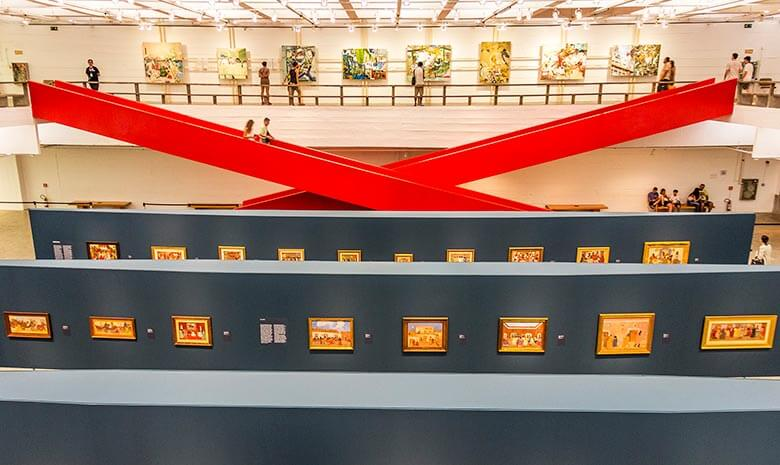

MASP

O Museu de Arte de São Paulo Assis Chateaubriand, popularmente conhecido como MASP,é um dos cartões postais mais
famosos de São Paulo. O que é perfeitamente compreensível,afinal, além da sua arquitetura inconfundível que já chama a atenção
de qualquer um que passa pela Avenida Paulista, seu acervo é um dos mais valiosos da América Latina.